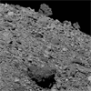

<!DOCTYPE html>
<html lang="en">
 <head>
<!-- Favicon -->
<link rel="shortcut icon" href="../../favicon.ico">
  <meta charset="utf-8"/>
  <title>
   NASA Says the OSIRIS REx Spacecraft is Orbiting Asteroid Bennu - The asteroid should be covered in regolith, the landscapes that resemble the lava field from the Kilauea Volcano show there is none
  </title>
  <meta content="Post on /v/Conspiracy from 2019-06-24 by Dillinger22." name="description"/>
  <meta content="NASA Says the OSIRIS REx Spacecraft is Orbiting Asteroid Bennu - The asteroid should be covered in regolith, the landscapes that resemble the lava field from the Kilauea Volcano show there is none" property="og:title"/>
  <meta content="Post on /v/Conspiracy from 2019-06-24 by Dillinger22." property="og:description"/>
  <link href="../../static/css/page.css" rel="stylesheet"/>
  <meta content="https://voat.conspiracy.hackliberty.org/thumbnails/b0/39/b039aabb-69d6-4117-8fe6-29bf6d74cda8.png" property="og:image"/>
  <meta content="https://voat.conspiracy.hackliberty.org/v/conspiracy/3294912.html" property="og:url"/>
  <meta content="width=device-width, initial-scale=1" name="viewport"/>
  <link href="https://voat.conspiracy.hackliberty.org/v/conspiracy/3294912.html" rel="canonical"/>
  <meta content="article" property="og:type"/>
  <meta content="Voat /v/Conspiracy Archive" property="og:site_name"/>
  <meta content="en_US" property="og:locale"/>
  <meta content="summary_large_image" name="twitter:card"/>
  <meta content="NASA Says the OSIRIS REx Spacecraft is Orbiting Asteroid Bennu - The asteroid should be covered in regolith, the landscapes that resemble the lava field from the Kilauea Volcano show there is none" name="twitter:title"/>
  <meta content="Post on /v/Conspiracy from 2019-06-24 by Dillinger22." name="twitter:description"/>
  <meta content="https://voat.conspiracy.hackliberty.org/thumbnails/b0/39/b039aabb-69d6-4117-8fe6-29bf6d74cda8.png" name="twitter:image"/>
 </head>
</html>
<body class="dark">
 <div id="container">
  <!-- array (
  'submissionid' => 3294912,
  'creationDate' => '2019-06-24 05:58:21',
  'domain' => 'planetary.org',
  'formattedContent' => NULL,
  'isAdult' => 0,
  'isAnonymized' => 0,
  'subverse' => 'Conspiracy',
  'thumbnail' => 'b039aabb-69d6-4117-8fe6-29bf6d74cda8.png',
  'title' => 'NASA Says the OSIRIS REx Spacecraft is Orbiting Asteroid Bennu - The asteroid should be covered in regolith, the landscapes that resemble the lava field from the Kilauea Volcano show there is none',
  'url' => 'http://www.planetary.org/blogs/emily-lakdawalla/2019/osiris-rex-sets-low-orbit.html',
  'userName' => 'Dillinger22',
  'archivedLink' => NULL,
  'archivedDomain' => NULL,
  'isDeleted' => 0,
) -->
  <div style="text-align:center; font-size:24px; font-weight:bold;">
   <a href="../../index.html" style="text-decoration: none; color: inherit;">
    Voat /v/Conspiracy Archive
   </a>
  </div>
  <div class="content" role="main">
   <div class="sitetable linklisting" id="siteTable">
    <div class="submission id-3294912 link type-text" id="submission-3294912">
     <a name="submissionTop">
     </a>
     <p class="parent">
     </p>
     <a class="thumbnail may-blank" href="http://www.planetary.org/blogs/emily-lakdawalla/2019/osiris-rex-sets-low-orbit.html" target="_self">
      
     </a>
     <div class="entry unvoted">
      <p class="title">
       <a class="title may-blank" href="http://www.planetary.org/blogs/emily-lakdawalla/2019/osiris-rex-sets-low-orbit.html" tabindex="1" target="_self" title="NASA Says the OSIRIS REx Spacecraft is Orbiting Asteroid Bennu - The asteroid should be covered in regolith, the landscapes that resemble the lava field from the Kilauea Volcano show there is none">
        NASA Says the OSIRIS REx Spacecraft is Orbiting Asteroid Bennu - The asteroid should be covered in regolith, the landscapes that resemble the lava field from the Kilauea Volcano show there is none
       </a>
       <span class="domain">
        (
        <a href="https://archive.searchvoat.co/search.php?d=planetary.org">
         planetary.org
        </a>
        )
       </span>
      </p>
      <p class="tagline">
       submitted
       <time datetime="2019-06-24T05:58:21+00:00" title="06/24/2019 5:58:21 AM">
        2019-06-24T05:58
       </time>
       by
       <span class="userattrs">
        <a class="author may-blank" href="https://archive.searchvoat.co/search.php?u=Dillinger22">
         Dillinger22
        </a>
       </span>
      </p>
      <ul class="flat-list buttons">
       <li class="first">
        <a class="comments may-blank" href="https://archive.searchvoat.co/v/Conspiracy/3294912" rel="nofollow">
         2 comments
        </a>
       </li>
      </ul>
     </div>
     <div class="child">
     </div>
     <div class="clearleft">
     </div>
    </div>
    <div class="clearleft">
    </div>
   </div>
   <div class="horizontal-line">
   </div>
   <div class="commentarea">
    <div class="sitetable nestedlisting" id="siteTable">
     <div class="child id-19349891 comment even" style="">
      <div class="entry unvoted">
       <div class="noncollapsed" id="19349891" style=";">
        <p class="tagline">
         <a class="author may-blank" href="https://archive.searchvoat.co/search.php?u=TraditionalCode0">
          TraditionalCode0
         </a>
         <span class="userattrs">
         </span>
         <time datetime="2019-06-24T09:01:58+00:00" title="6/24/2019 9:01:58 AM">
          2019-06-24T09:01
         </time>
        </p>
        <div class="usertext-body may-blank-within" id="commentContent-19349891">
         <div class="md">
          <p>
           <p>
            Zeroing out the Traditional Code:
           </p>
           <p>
            Osiris-Rex project.
Psyop rather.
Osiris is King.  Did you know that?
Uh huh.
Osiris.....he's king.
And in the Later Period of Egyptian history, the Bennu was his symbol.
The Ba to Ra. Lord of the Royal Jubilee.
           </p>
           <p>
            The Phoenix.
           </p>
           <p>
            Like Apollo and Saturn rockets.....NASA is all about the Occult.
           </p>
           <p>
            Osiris rules Time and Space the dimensions we live in.
           </p>
           <p>
            Symbolically speaking.
           </p>
           <p>
            Patron Saint Jack Parsons would tell you all about it.
           </p>
           <p>
            The Bennu rested on the Ben-Ben stone while the primevil waters of chaos receeded at the world's formation.
           </p>
           <p>
            Herodotus believed it came to Arabia every 500 years carrying the body of its father as an egg.
           </p>
           <p>
            Symbols folks, of the Satanic Cycle in time.
           </p>
           <p>
            Break the Code.
           </p>
           <p>
            Be as wise as serpents, yet blameless as a dove.
           </p>
           <p>
            Whatever truth lies hidden in the Occult.
           </p>
           <p>
            NASA hides within the lies.
           </p>
          </p>
         </div>
        </div>
        <ul class="flat-list buttons">
         <li class="first">
          <a class="bylink" href="https://archive.searchvoat.co/v/Conspiracy/3294912/19349891" rel="nofollow">
           link
          </a>
         </li>
        </ul>
       </div>
      </div>
     </div>
     <div class="child id-19349086 comment even" style="">
      <div class="entry unvoted">
       <div class="noncollapsed" id="19349086" style=";">
        <p class="tagline">
         <a class="author may-blank" href="https://archive.searchvoat.co/search.php?u=Dillinger22">
          Dillinger22
         </a>
         <span class="userattrs">
         </span>
         <time datetime="2019-06-24T06:06:06+00:00" title="6/24/2019 6:06:06 AM">
          2019-06-24T06:06
         </time>
        </p>
        <div class="usertext-body may-blank-within" id="commentContent-19349086">
         <div class="md">
          <p>
           <blockquote>
            <p>
             <a href="http://magaimg.net/img/8a5w.jpg">
              Kilauea Lava Field
             </a>
             .
            </p>
           </blockquote>
          </p>
         </div>
        </div>
        <ul class="flat-list buttons">
         <li class="first">
          <a class="bylink" href="https://archive.searchvoat.co/v/Conspiracy/3294912/19349086" rel="nofollow">
           link
          </a>
         </li>
        </ul>
       </div>
      </div>
     </div>
    </div>
   </div>
  </div>
 </div>
<!-- Footer Section -->
<footer class="container-fluid mt-3">
  <p class="small mb-0">
    /v/conspiracy archive has 42504 posts and 159856 total comments.
    <a href="https://git.hackliberty.org/c0mmando/voat-conspiracy-archive/">source code</a>.
  </p>
</footer>

<script src="../../static/js/jquery-3.7.1.slim.min.js"></script>
<script src="../../static/js/comments-toggle.js"></script>

</body>
